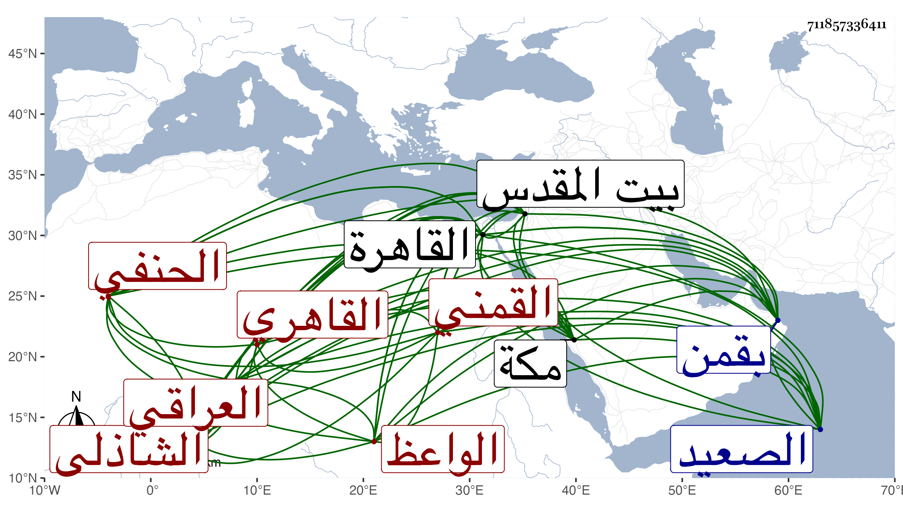

0902Sakhawi.DawLamic.ITO20230111-ara1.EIS1600.711857336411
Biography ID: 711857336411
32
محمد بن عبد الرحمن بن محمد بن يحيى بن حسين فتح الدين أبو الفتح العراقي الأصل القمني ثم القاهري الحنفي الشاذلي الواعظ . ولد في يوم الجمعة مستهل رمضان سنة إحدى وأربعين وثمانمائة بقمن وتحول منها مع أبويه وهو مرضع إلى القاهرة فحفظ مع القرآن المجمع والأخسيكتي والملحة وألفية ابن ملك وعرض على جماعة من الشافعية كالمحلي والبلقيني والمناوي والعبادي والديمي وكاتبه ومن الحنفية العيني وابن الديري وابن الهمام وابن قديد وأبي العباس السرسي وأقام تحت نظره بزاوية الشيخ محمد الحنفي ثم بجامع كزلبغا في حفظها ، ومن المالكية الزين طاهر وابن عامر وجود القرآن على الشمس بن الحمصاني واشتغل عند أبي العباس المذكور والأمين الأقصرائي وسيف الدين وغيرهم في الفقه والعربية ، وحج غير مرة وكذا زار بيت المقدس وقرأ بعض القرآن على ابن عمران بل سمع عليه جزء ابن الجزري وتسلسل له ما فيه وذلك في سنة إحدى وسبعين ، وكذا حضر دروس الكمال بن أبي شريف وقرأ البخاري هناك على السراج أبي حفص عمر بن أبي الجود عبد المؤمن الحلبي المقدسي الشافعي ودخل الصعيد فزار في طنبذا صالحها الشيخ حسن وكذا اجتمع في القاهرة بعمر الكردي وقدمه للإمامة بجامع قيدان فكان في ذلك إشارة إلى استقراره إماما بمدرسة جانم المواجهة لجامع قوصون أصالة وبالجانبكية وغيرها نيابة ، ولما كنت بمكة طلع في موسم سنة ثمان وتسعين فحج وتأخر مجاورا السنة التي تليها فاجتمع بي وعقد مجلس الوعظ وكذا عقده بغيرها وسألني في شرح غرامي صحيح وفي كتابة شيء من تصانيفي والقراءة وكذا بلغني أنه أخذ عن ابن الأسيوطي . وبالجمله فعنده إحساس ومزاحمة مع سلامة صدر .
